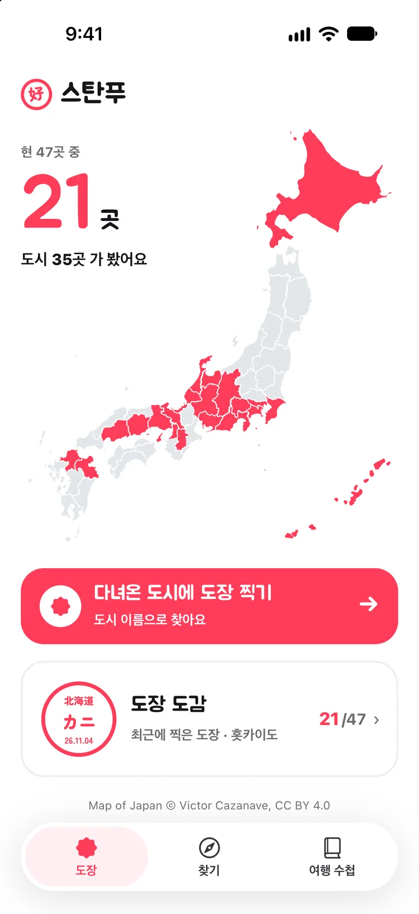
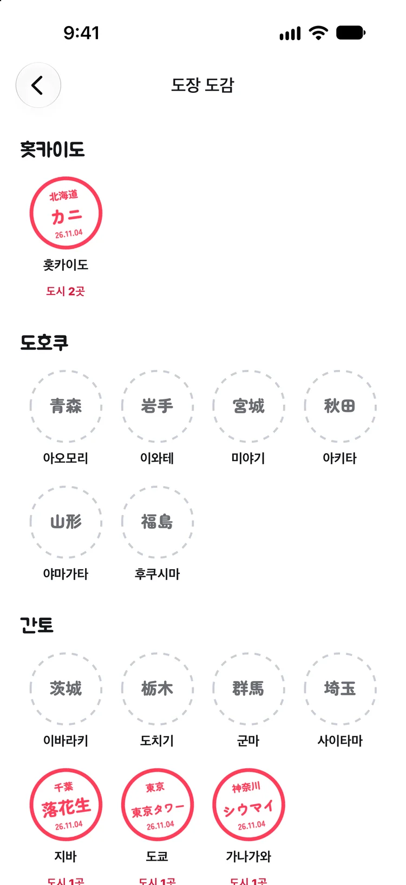
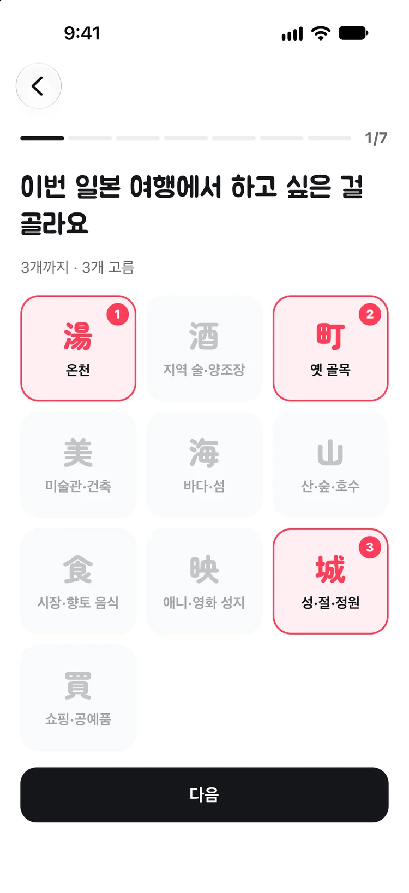
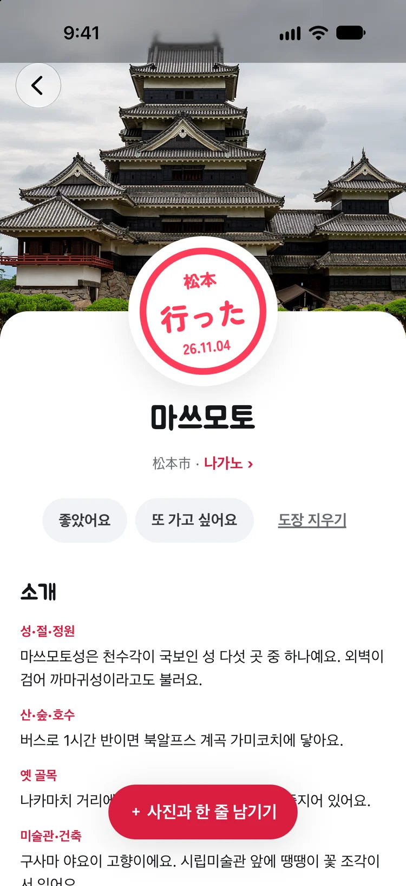

도장
시·정·촌 1,719곳을 이름으로 찾아 도장을 찍어요. 찍은 날짜가 함께 남고, 가 본 현은 지도에 색이 칠해져요.
스탄푸
다녀온 일본 도시에 도장을 찍어 내 일본 지도를 채워요. 도시 1,719곳을 찾을 수 있고, 다음 여행지는 취향 질문 7개로 골라 드려요.
지금은 iPhone에서만 받을 수 있어요. 둘러보기는 로그인 없이 할 수 있고, 광고는 없어요.

시·정·촌 1,719곳을 이름으로 찾아 도장을 찍어요. 찍은 날짜가 함께 남고, 가 본 현은 지도에 색이 칠해져요.

소도시 56곳을 추천해요. 질문 7개에 답하면 취향에 맞는 세 곳을 골라 주고, 온천·먹거리 같은 주제로도 볼 수 있어요.

도시 1,719곳 모두 소개가 있어요. 볼거리, 먹거리, 사진은 도시마다 양이 달라요. 내용은 공식 관광 사이트 같은 출처를 확인해 썼어요.

여행 일본어, 긴급 연락, 교통카드, 면세, 입국 준비를 정리했어요. 일본어 문장은 소리로 들을 수 있어요.
사진과 한 줄을 도시에 남겨요. 원할 때만 다녀온 사람들에 공개돼요.